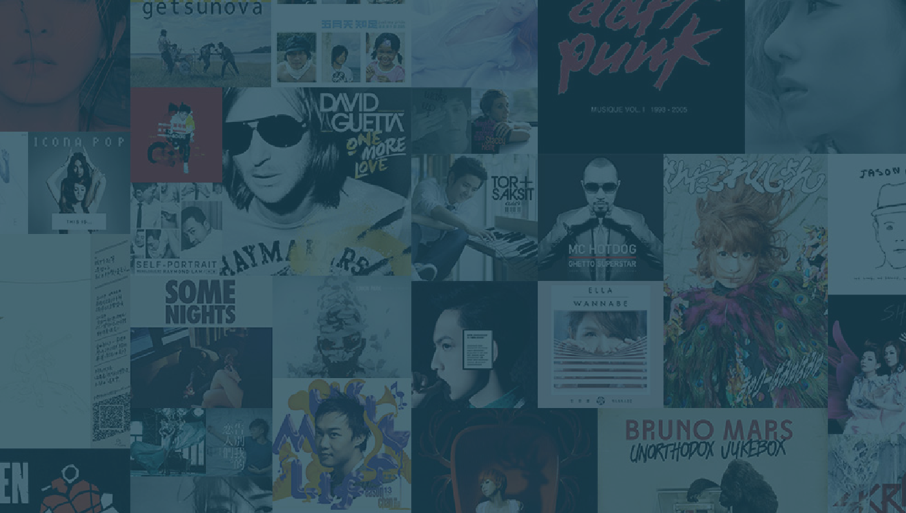
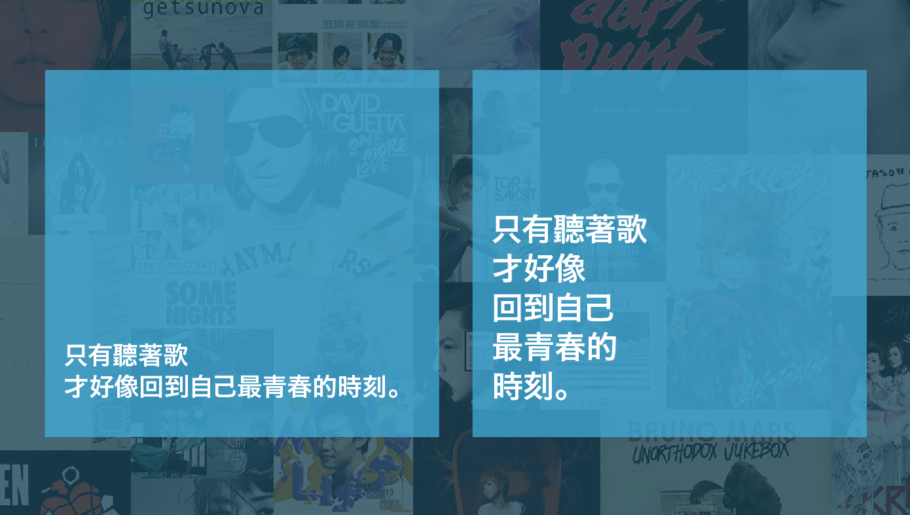
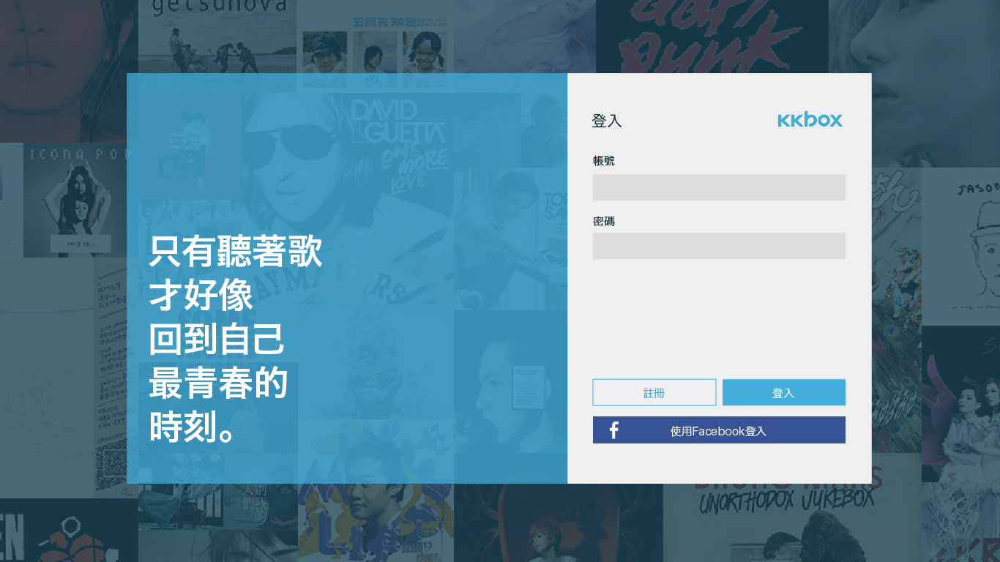

之前在練習UI設計遇到登入/註冊介面設計時，決定選擇一個企業的既有登入畫面改造，而最後選上KKBOX。一起來看看我做了什麼變化吧!
| Platform | WebSite |
|---|---|
| Work | UI Design |
| Skill | Adobe Illustrator Adobe After Effects |
| Status | Done |
我認為kkbox目前的登入頁面最大的問題出在沒有鮮明的企業形象。Kkbox是提供音樂串流服務的公司，而目前數位音樂的市場越來越大，kkbox已經不再是唯一的擁有者/提供者了，諸如spotify，apple music等，也是選項之一。而登入介面在我的眼中比較偏向一個宣傳的角色，而不是服務的角色。舉例來說，登入頁面像是在餐廳外面招攬客人的公關，音樂內容則是餐廳內的服務生，你不會期望服務生一直在餐廳內大呼小叫，但是公關也不可能在街頭彬彬有禮的拉客。現在網路有提供session和cookie的服務，可以記錄使用者登入狀態，因此大部分的時間使用者是不會用到登入頁面的，而大部分接觸到的使用者都是新用戶，因此我才會認為登入介面要向公關一樣，強而有力的推銷自己的產品。
使用比較強烈的設計氛圍強化使用者的第一印象
配色上，我選擇大量使用kkbox的標準藍色，因為我認為這是一個很容易被記住，且不容易和其他品牌相撞的顏色，簡單來說，我看到這個顏色就會想到kkbox。而背景的部分，圖片是來自於kkbox另外一個登入介面的底圖，但是該介面選擇使用半透明黑色遮罩，而我們這邊選擇半透明的藍色遮罩，使用者一進入頁面就要沈浸在這股藍色的氛圍內。
再來是標語的部分。前面提到，既然是攬客的公關，我希望標語能夠有非常好的穿透力，能夠讓使用者一眼記住。這裡我選擇的方法是使用粗黑體，並且頻繁的斷行，雖然可能會降低可讀性，但我發現如果標語內容簡短，這種斷行方式似乎能夠起到引導閱讀的作用，讓使用者不知不覺就讀完整句。
最後，來替介面加上一點轉場吧！如同我一再強調的，登入頁面是網站最不常被看見，但是最先被看見的頁面，因此我認為適度的華麗感是必要的，這裡的設計風格能夠讓使用者輕易的感覺出這間公司是不是一個年輕的企業。首先，我希望背景圖片能夠隨著使用者滑鼠移動而移動，給使用者一種窺探音樂寶庫的期待和驚喜感，而登入/註冊切換部分使用簡單地向右淡出，配合上背景圖片的移動，打造出的現代感遠遠勝過原有的登入畫面。
最後的Prototype:

通常UI設計上會有所謂的”60-30-10”規則，強調色只能佔頁面的配色10%。但在登入頁面上，我追求的不是最舒適、安全的設計，而使能夠搶走使用者目光的設計，因此這邊盡量在保持使用者合理的體驗和一些會讓使用者驚喜，覺得特別的亮點上取得平衡，讓使用者進入登入頁面既不會不知所措，又有人進入一段冒險的氣氛。